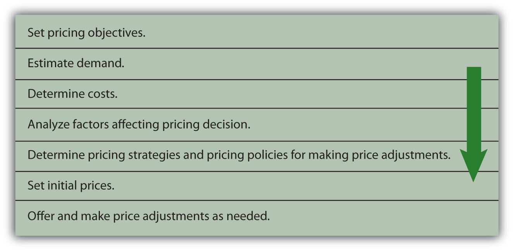

Prices can be easily changed and easily matched by your competitors. Consequently, your product’s price alone might not provide your company with a sustainable competitive advantage. Nonetheless, prices can attract consumers to different retailers and businesses to different suppliers.
Organizations must remember that the prices they charge should be consistent with their offerings, promotions, and distribution strategies. In other words, it wouldn’t make sense for an organization to promote a high-end, prestige product, make it available in only a limited number of stores, and then sell it for an extremely low price. The price, product, promotion (communication), and placement (distribution) of a good or service should convey a consistent image. If you’ve ever watched the television show The Price Is Right, you may wonder how people guess the exact price of the products. Watch the video clip below to see some of the price guessing on The Price Is Right.
Perfect Bid on The Price Is Right
http://www.youtube.com/v/JMFFGFmn20kContestant guesses exact price of prizes.
Trying to Figure Out When The Price Is Right
http://www.youtube.com/v/pR1Mmxr2Cb4How do consumers get so close when guessing the prices of products?
Before pricing a product, an organization must determine its pricing objectivesWhat an organization wants to accomplish with its pricing.. In other words, what does the company want to accomplish with its pricing? Companies must also estimate demand for the product or service, determine the costs, and analyze all factors (e.g., competition, regulations, and economy) affecting price decisions. Then, to convey a consistent image, the organization should choose the most appropriate pricing strategy and determine policies and conditions regarding price adjustments. The basic steps in the pricing framework are shown in Figure 15.2 "The Pricing Framework".
Figure 15.2 The Pricing Framework
Different firms want to accomplish different things with their pricing strategies. For example, one firm may want to capture market share, another may be solely focused on maximizing its profits, and another may want to be perceived as having products with prestige. Some examples of different pricing objectives companies may set include profit-oriented objectives, sales-oriented objectives, and status quo objectives.
ROI, or return on investment, is the amount of profit an organization hopes to make given the amount of assets, or money, it has tied up in a product. ROI is a common pricing objective for many firms. Companies typically set a certain percentage, such as 10 percent, for ROI in a product’s first year following its launch. So, for example, if a company has $100,000 invested in a product and is expecting a 10 percent ROI, it would want the product’s profit to be $10,000.
Many companies set their prices to increase their revenues as much as possible relative to their costs. However, large revenues do not necessarily translate into higher profits. To maximize its profits, a company must also focus on cutting costs or implementing programs to encourage customer loyalty.
In weak economic markets, many companies manage to cut costs and increase their profits, even though their sales are lower. How do they do this? The Gap cut costs by doing a better job of controlling its inventory. The retailer also reduced its real estate holdings to increase its profits when its sales were down during the latest economic recession. Other firms such as Dell, Inc., cut jobs to increase their profits. Meanwhile, Walmart tried to lower its prices so as to undercut its competitors’ prices to attract more customers. After it discovered that wealthier consumers who didn’t usually shop at Walmart before the recession were frequenting its stores, Walmart decided to upgrade some of its offerings, improve the checkout process, and improve the appearance of some of its stores to keep these high-end customers happy and enlarge its customer base. Other firms increased their prices or cut back on their marketing and advertising expenses. A firm has to remember, however, that prices signal value. If consumers do not perceive that a product has a high degree of value, they probably will not pay a high price for it. Furthermore, cutting costs cannot be a long-term strategy if a company wants to maintain its image and position in the marketplace.
Maximizing sales involves pricing products to generate as much revenue as possible, regardless of what it does to a firm’s profits. When companies are struggling financially, they sometimes try to generate cash quickly to pay their debts. They do so by selling off inventory or cutting prices temporarily. Such cash may be necessary to pay short-term bills, such as payroll. Maximizing sales is typically a short-term objective since profitability is not considered.
Some organizations try to set their prices in a way that allows them to capture a larger share of the sales in their industries. Capturing more market share doesn’t necessarily mean a firm will earn higher profits, though. Nonetheless, many companies believe capturing a maximum amount of market share is downright necessary for their survival. In other words, they believe if they remain a small competitor they will fail. Firms in the cellular phone industry are an example. The race to be the biggest cell phone provider has hurt companies like Motorola. Motorola holds only 10 percent of the cell phone market, and its profits on their product lines are negative.
Sometimes a firm’s objective may be to maintain the status quoAn objective a firm sets to maintain its current prices and/or its competitors’ prices. or simply meet, or equal, its competitors’ prices or keep its current prices. Airline companies are a good example. Have you ever noticed that when one airline raises or lowers its prices, the others all do the same? If consumers don’t accept an airline’s increased prices (and extra fees) such as the charge for checking in with a representative at the airport rather than checking in online, other airlines may decide not to implement the extra charge and the airline charging the fee may drop it. Companies, of course, monitor their competitors’ prices closely when they adopt a status quo pricing objective.
Price is the only marketing variable that generates money for a company. All the other variables (product, communication, distribution) cost organizations money. A product’s price is the easiest marketing variable to change and also the easiest to copy. Before pricing a product, an organization must determine its pricing objective(s). A company can choose from pricing objectives such as maximizing profits, maximizing sales, capturing market share, achieving a target return on investment (ROI) from a product, and maintaining the status quo in terms of the price of a product relative to competing products.